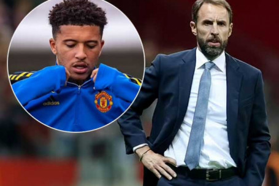

ĐT Anh sắp có 2 trận đấu với Andorra và Hungary trong khuôn khổ vòng loại World Cup 2022 khu vực châu Âu diễn ra vào tuần tới. Mới đây, HLV Gareth Southgate đã quyết định triệu tập 3 cầu thủ thuộc biên chế MU lên tuyển để chuẩn bị cho loạt trận này, trong đó trường hợp gây chú ý nhất thuộc về Jadon Sancho.
Cựu cầu thủ Dortmund đã có 8 lần ra sân cho MU từ đầu mùa, trải qua 402 phút không có bất kỳ bàn thắng hay pha kiến tạo nào. Tuy nhiên, HLV Southgate cho rằng ông không muốn Sancho phải chịu đựng thêm sức ép trong trường hợp không được lên tuyển đợt này..
“Cậu ấy có xứng đáng lên tuyển sau những màn trình diễn ở những tuần vừa qua không ư? Có lẽ là không”, Southgate thừa nhận. “Nhưng chúng tôi đã đầu tư cho Jadon trong một khoảng thời gian và tin tưởng rằng cậu ấy có thể vươn tới đẳng cấp cao hơn. Tôi sẽ tìm thời gian trò chuyện với cậu ấy, giải quyết những vấn đề trong quá trình chơi cho United.
Với cậu ấy, việc nhận được một thông điệp rằng chúng tôi vẫn tin tưởng, là điều tốt. Sẽ không có một phương án hoàn hảo ở đây. Anh có thể dễ dàng ném vào mặt tôi một vài cái tên mà tôi từng gạt ra trong những lần triệu tập trước đây và bảo rằng, ‘Đây, ông không đối xử với họ theo cách đó’. Chúng tôi nỗ lực để đưa ra một thông điệp hợp lý, và đôi khi thông điệp đó là loại bỏ cầu thủ ra khỏi danh sách. Với Jadon, chúng tôi thấy việc giữ cậu ấy lại là quan trọng”.
Bên cạnh đó, HLV Southgate nói thêm về sự chật vật của Sancho trong việc thích nghi với MU nói riêng và Ngoại hạng Anh nói chung: “Bundesliga là một giải đấu hoàn toàn khác. Dortmund là một CLB lớn nhưng MU lại là một trong những đội bóng lớn nhất thế giới.
Những gì làm được ở Bundesliga không thể áp cho Ngoại hạng Anh. Bundesliga là giải đấu thích hợp cho những cầu thủ trẻ, bởi nơi đó có những đội bóng không có đẳng cấp quá cao. Còn tại đây, trận đấu nào cũng rất cam go và có lẽ cậu ấy đã bắt đầu nhìn nhận được điều này rồi”.